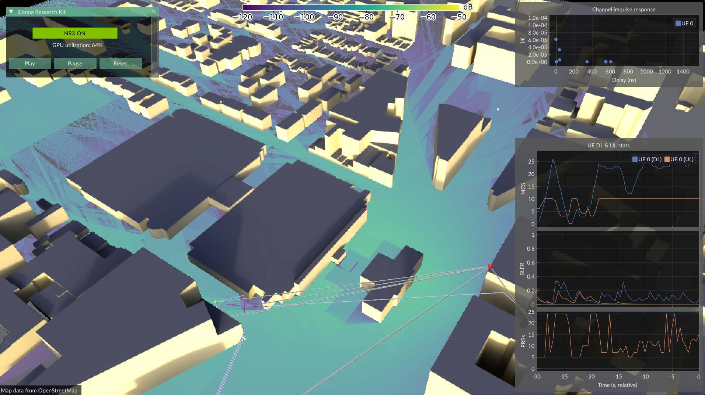
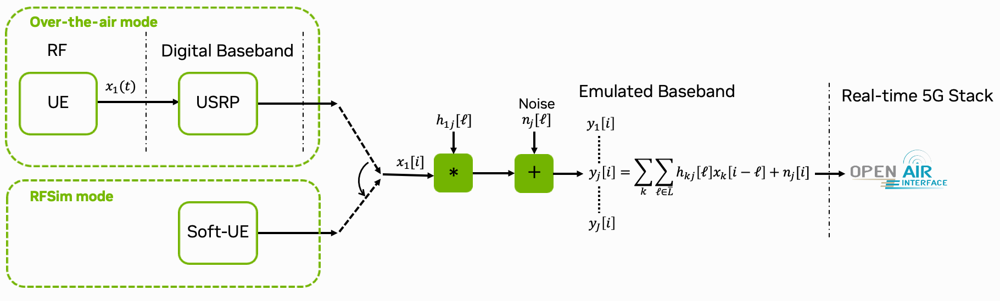
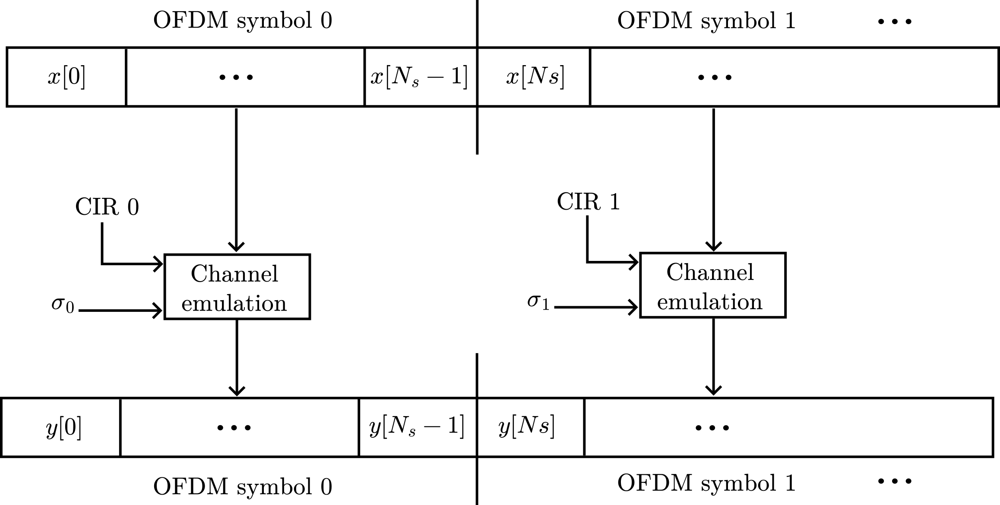
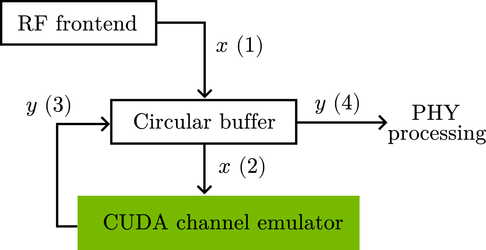
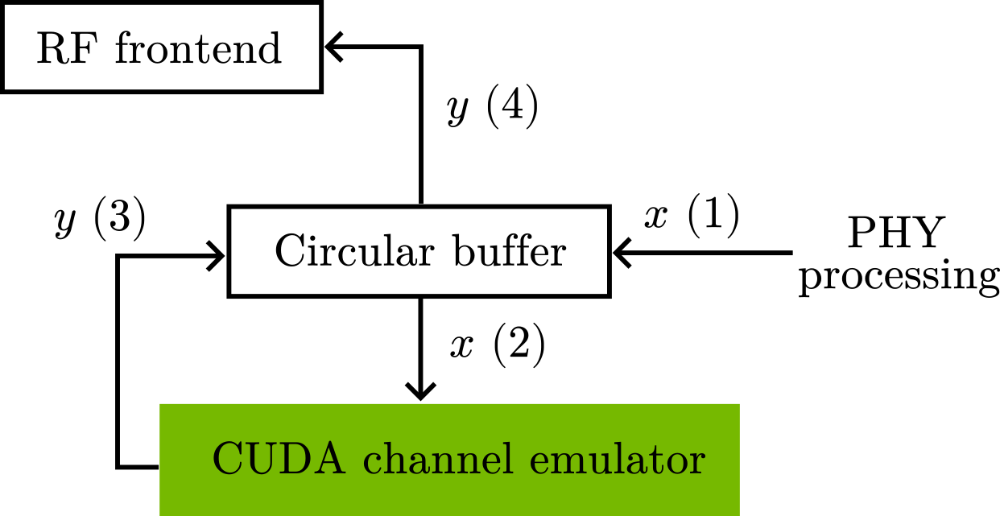

Real-time Channel Emulator#
{kind=link}

Fig. 29 Digital twinning via real-time channel emulation: a UE connected to the gNB with live UE statistics. This demo was presented at GTC DC 2025.#
Testing AI/ML algorithms under realistic channel conditions is essential for evaluating site-specific performance. The CUDA channel emulator applies channel impulse responses (CIRs) to IQ samples in real time, simulating signal propagation as if the user were located in a specific digital twin environment. As shown in Fig. 30, this works with both USRP hardware – using the O-RAN split 8 option – and rfsim mode, providing consistent conditions between fully simulated and real RF setups.
{kind=link}

Fig. 30 Overview of the CUDA channel emulator integrated into the OAI gNB stack.#
The channel emulation plugin supports two modes:
File-based: Load pre-computed CIRs from disk, e.g., pre-computed and exported from the SionnaRT GUI.
ZMQ-based: Receive CIRs at runtime via ZeroMQ streaming from the SionnaRT GUI or custom applications. This mode is well suited for live demos and closed-loop control scenarios. For higher UE velocities, ray tracing update rates may become a bottleneck; in such cases the file-based mode is recommended.
The RAN Intelligent Controller (RIC) & xApps stats server can be used to visualize UE statistics (MCS, BLER) alongside the channel emulation. This is also integrated into the SionnaRT GUI.
Note
The channel emulator works best with the SionnaRT GUI to generate and export CIRs. It is automatically installed when you install the requirements.txt file, and can be started via:
sionna-rt-gui --priority --config <config.yaml>
The GUI uses NVIDIA MPS, which is required when real-time ray tracing runs concurrently with other CUDA plugins on the GPU (see NVIDIA MPS). The active thread percentage can be configured via the MPS_ACTIVE_THREAD_PCT environment variable (default: 40%). The scripts ./scripts/start_mps.sh and ./scripts/stop_mps.sh can be used to start (and stop) MPS before starting the gNB and the GUI.
Note
Only SISO channel emulation is currently supported. The channel is normalized and the noise power is scaled accordingly, acting as implicit perfect gain control. Path gains are clipped to prevent UE disconnections. While this is a good approximation for many scenarios, it does not exactly match real-world behavior.
Running the GTC DC 2025 Demo#
The channel emulation demo shown at GTC DC 2025 can be reproduced using the provided demo script. It starts the full 5G network in rfsim mode with the ZMQ-based channel emulator, connects the UE, launches iperf3 traffic, and optionally starts the SionnaRT GUI:
# enable the channel emulator in config/rfsim/.env file
# ZMQ-based CIR (interactive, use with SionnaRT GUI)
GNB_EXTRA_OPTIONS="--cir-zmq-num-taps 48"
# Start MPS
./scripts/start_mps.sh
# Start the gNB / 5G system
./scripts/start_system.sh rfsim # use b200 for over the air with USRPs
# Start the demo (with GUI, requires connected monitor)
sionna-rt-gui --priority --config spark_quectel.yaml
# stop MPS when done
./scripts/stop_mps.sh
The script activates the RAN Intelligent Controller (RIC) & xApps stats server (monitor_xapp), which streams MAC-layer statistics (MCS, BLER, PRB usage) via ZMQ to the SionnaRT GUI for live visualization.
For simplicity, this uses the rfsim mode as default. However, you can also connect the Quectel modem by selecting the b200 config file in the demo script and set the environment variables accordingly.
To observe meaningful UE statistics, iperf3 traffic must be running on the UE. The demo script starts a continuous downlink iperf3 session automatically.
# In the UE
# add routing if needed
sudo ip route add 192.168.72.135 via 12.1.1.2 dev wwan0
# start iperf3
iperf3 -t 86400 -i 1 -B 12.1.1.2 -c 192.168.72.135 -R
The default configuration file spark_quectel.yaml mentioned earlier is shipped with the SionnaRT GUI and is located in the <venv>/lib/python3.12/site-packages/sionna_rt_gui/data/configs/sionna_rt_gui/ directory. You can copy it to your local directory and edit as needed.
Note
The SionnaRT GUI requires RT cores for real-time ray tracing and is designed for DGX Spark. On Jetson platforms, the GUI can run on a separate CUDA-enabled host machine; just forward ports 5555 (stats ZMQ) and 5556 (CIR ZMQ) to the Jetson via ssh port forwarding.
Configuration#
The channel emulator is configured via the GNB_EXTRA_OPTIONS environment variable in your .env file (e.g., config/b200/.env or config/rfsim/.env).
Option 1: File-based CIR
GNB_EXTRA_OPTIONS="--cir-folder /opt/oai-gnb/plugins/channel_emulation/data/pass_through_cir"
Option 2: ZMQ-based CIR (interactive)
GNB_EXTRA_OPTIONS="--loader.chn_emu.shlibpath /usr/local/lib --loader.cir_zmq.shlibpath /usr/local/lib --cir-zmq-num-taps 48"
These options are set in the .env file for your configuration (e.g., config/b200/.env or config/rfsim/.env). The relevant command-line options are:
--cir-folder: Folder containingconfig.jsonandcirs.bin(file mode only).--cir-zmq-num-taps: Number of CIR taps (ZMQ mode only).
A new CIR folder can be generated with the SionnaRT GUI, and then copied to the OAI plugins/channel_emulation/ directory.
By default, the pass-through CIR folder is used (plugins/channel_emulation/data/pass_through_cir), which applies no distortion to the signal and is useful for verifying the setup.
NVIDIA MPS#
When running the SionnaRT GUI alongside the gNB, NVIDIA Multi-Process Service (MPS) is recommended to share the GPU between the ray tracer and the gNB process. Without MPS, these processes are time-sliced, which introduces latency spikes incompatible with the strict real-time requirements of the gNB. Note that the primary reason for MPS is the co-existence of the ray tracing and the gNB process; the individual CUDA plugins within the gNB are less of a concern since they run within the same process.
MPS must be started before launching the gNB. The ./scripts/start_mps.sh script handles this automatically:
# Start MPS
./scripts/start_mps.sh
...
# Stop MPS
./scripts/stop_mps.sh
The default active thread percentage is 40%, balancing GPU resources between the channel emulator and other CUDA plugins. It can be overridden via the MPS_ACTIVE_THREAD_PCT environment variable.
File-Based CIR Source#
CIR data can be exported directly from the SionnaRT GUI and placed into the plugins/channel_emulation/ directory for use with the file loader.
The file loader (plugins/channel_emulation/file_loader/) reads pre-computed CIRs from a folder containing two files:
config.json: Metadata about the CIR data.cirs.bin: Packed binary CIR entries.
config.json format:
{
"channel_emulation": {
"num_taps": 16,
"num_cirs": 140,
"sigma_scaling": 100.0,
"sigma_max": 200.0
}
}
num_taps: Number of taps per CIR.num_cirs: Total number of CIR entries in the binary file. Must be divisible by the number of OFDM symbols per slot.sigma_scaling: Scaling factor \(\sigma_{\text{scaling}}\) for noise computation (see (68)).sigma_max: Maximum noise standard deviation \(\sigma_{\max}\) (see (68)).
Binary data format (cirs.bin):
Each entry corresponds to one OFDM symbol and has the following packed layout:
struct cir_entry {
float norm; // Channel norm ||h_s||
float taps[num_taps * 2]; // Complex taps [Re, Im, Re, Im, ...]
uint16_t tap_indices[num_taps]; // Tap delay indices
};
CIRs are organized into slots of num_symbols_per_slot entries each. When the end of the file is reached, playback wraps around to the beginning.
Pass-through CIR. A pass-through CIR is provided in plugins/channel_emulation/data/pass_through_cir/ for testing and debugging. It applies no distortion (\(y[n] = x[n]\)), configured with a single unity-gain tap and zero noise.
To generate a custom pass-through CIR:
python plugins/channel_emulation/data/pass_through_cir/create_pass_through_cir.py \
-o /tmp/pass_through -s 14 -n 10
where -o specifies the output folder, -s the number of symbols per slot (default 14), and -n the number of slots (default 1).
ZMQ-Based CIR Source#
The ZMQ mode is activated by loading the cir_zmq library (see Configuration). The number of CIR taps is set via the parameter --cir-zmq-num-taps.
The ZMQ CIR source (plugins/channel_emulation/zmq_loader/) exposes a ZeroMQ REP socket on port 5555 that accepts JSON messages to update CIRs at runtime.
In case the GUI is running on a different machine, you can forward the ports 5555 and 5556 to the DGX Spark via ssh port forwarding.
Supported message types are:
config_req: Query the current emulator configuration (FFT size, subcarrier spacing, carrier frequency, number of taps).cir: Push new CIR taps and noise parameters.
The ZMQ source initializes with sensible defaults (pass-through channel) and updates CIRs as messages arrive. This is the recommended mode for interactive use with the SionnaRT GUI, which streams CIRs based on the simulated scene. The GUI can run on the same machine (e.g., DGX Spark) or on a remote machine connected over Ethernet.
Technical Background#
The CUDA channel emulator applies channel impulse responses (CIRs) to data samples to simulate signal distortion caused by the channel as shown in Fig. 30. It supports a different CIR and noise standard deviation for each OFDM symbol, enabling the modeling of time-varying channels. The channel emulator computes:
Here, \(y[n]\) is the \(n\)-th output sample, \(h_s[\ell]\) is the tap coefficient at delay \(\ell\) for OFDM symbol \(s\), \(x[n-\ell]\) is the corresponding input sample, \(\sigma_s\) is the noise standard deviation for OFDM symbol \(s\), \(w[n]\) is a random normally distributed noise sample, and \(L\) is the number of taps in the CIR.
{kind=link}

Fig. 31 Illustration of the OFDM symbols and corresponding time-varying CIRs.#
Channel normalization. To prevent numerical issues, the CIR is normalized and the noise standard deviation is scaled:
where \(\bar{h}_s[\ell] = h_s[\ell] / \lVert h_s \rVert\) is the normalized tap coefficient and
When \(\sigma_{\text{scaling}} / \lVert h_s \rVert \leq \sigma_{\max}\), this yields the same SNR as the original equation (66).
Tap reordering. The taps can be applied in any order using explicit delay indices \(\tau_s[\ell]\), enabling processing by decreasing amplitude. This allows reducing the effective number of taps \(L\) while still capturing most of the channel energy.
Integration into OAI#
Like other plugins, the CUDA channel emulator is provided as a shared library, loaded via the OAI shared library loader. Its implementation resides in plugins/channel_emulation/cuda_emulator/.
The radio unit (RU) invokes the channel emulator to apply CIRs to data samples immediately after reading them from the RF frontend (uplink), and just before writing them to the RF frontend (downlink).
{kind=link}

Fig. 32 Uplink processing flow with CUDA channel emulator.#
{kind=link}

Fig. 33 Downlink processing flow with CUDA channel emulator.#
In both directions, a slot of IQ samples is stored in a circular buffer. The channel emulator applies the CIRs in place before the samples are forwarded. This process is repeated for each slot sequentially.
CUDA implementation. Each CUDA thread computes the convolution for a single output sample. On DGX Spark and Jetson platforms, the shared memory architecture avoids costly host-device memory transfers typical of split-memory systems.
Testing#
Unit tests verify correctness of each component against a reference implementation. They can be run individually:
# CUDA channel emulator
cd plugins/channel_emulation && pytest cuda_emulator/tests/unit -v
# File loader
cd plugins/channel_emulation && pytest file_loader/tests/unit -v
# ZMQ loader
cd plugins/channel_emulation && pytest zmq_loader/tests/unit -v
Alternatively, all channel emulation tests can be run via the test framework:
plugins/testing/run_all_tests.sh --tutorial channel_emulation
Limitations#
The following limitations currently apply:
SISO only: Only single-input single-output channel emulation is supported.
Symbol-static CIR: The CIR is assumed to be constant during each OFDM symbol.
Tap delay limit: The maximum supported tap delay \(\tau[\cdot]\) is 256 samples. This constant is defined in the implementation and can be increased if needed.